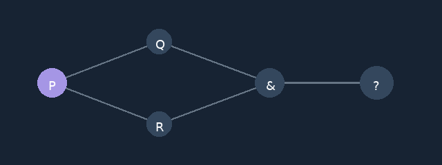
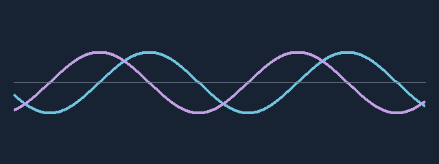
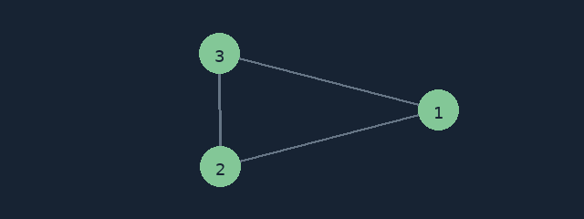

Attack on Christendom
Issue One: Chesshustlagaard Meets the Laboratory Night Owl.
Sunday, October 4, 2026 · Michael Emanuel Glover
Books, papers, chess worlds, comic panels, and a peculiar tournament existentialist. Today’s published work and refreshed pages, together at one table.
Issue One: Chesshustlagaard Meets the Laboratory Night Owl.
A peculiar kind of tournament existentialist.

Natural language, naming, and “it follows.”

Quantum simulation, measured memory, and reproducible calculations.
Chess bounds and reproducible certificates.
A Manuelian inquiry into knowledge, perspective, and origins.
The collection and its three individual papers.
A proposed model with illustrative calculations.

Economic data and policy-model explorations.
Medicine, benefit, uncertainty, and danger.
Computational research, assay benchmarks, and an 80-page dissertation.
New games, cheerful reviews, and playful commentary.
Storybook commentary and classic rage comics.
The Maestro world with today’s additions.
Worlds and the storybook doorway.
Live storybook commentary.
Emoji cast and live commentary.
Cyber cast and live commentary.
Playworld with live commentary.
New storybook doorway.
New storybook doorway.
New storybook doorway.
New storybook doorway.
Refined classic faces and comic panels.
Refined classic faces and comic panels.
Refined classic faces and comic panels.
Refined classic faces and comic panels.
Refined classic faces and comic panels.
Download the game record.
Download the game record.